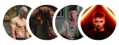
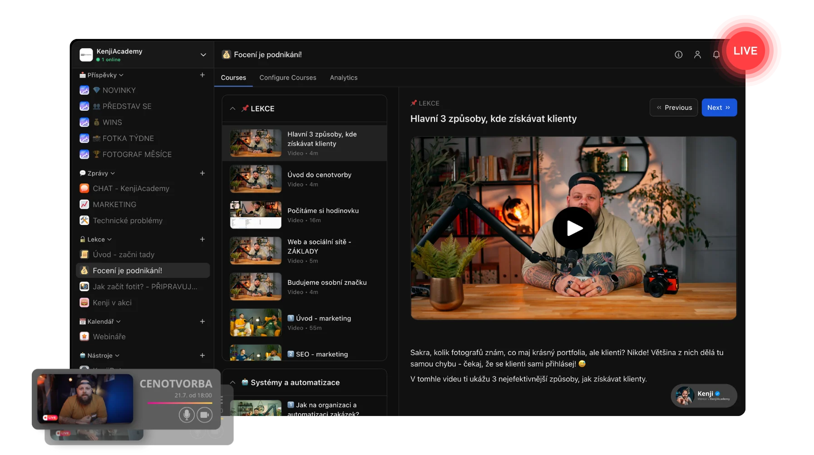
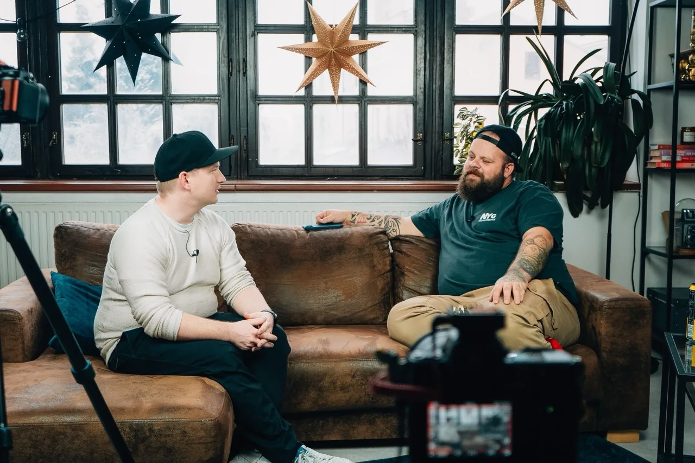
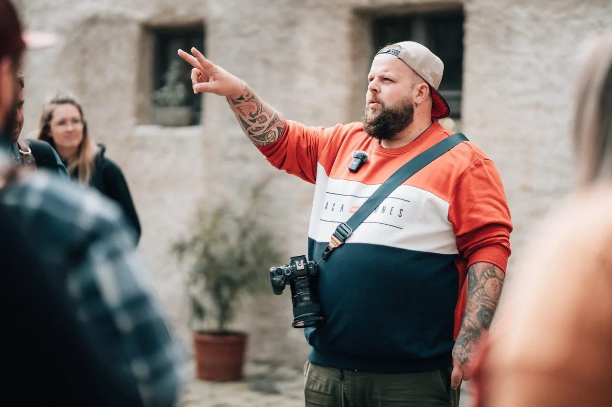
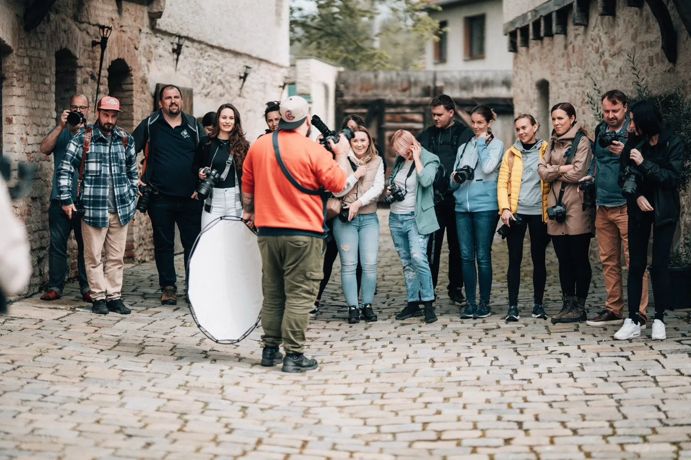
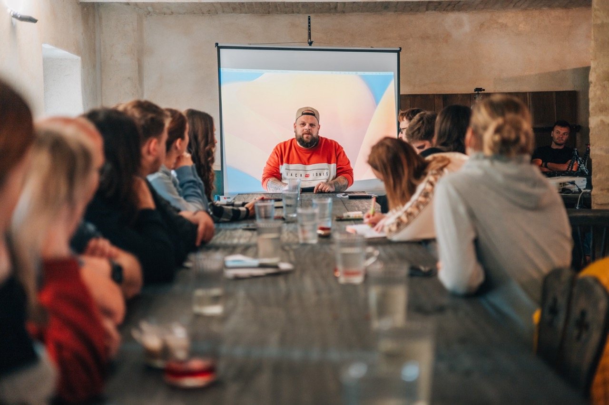

01 / NABÍDKA
Klient konečně pochopí, co mu přineseš.
Vybereš obor, pojmenuješ výsledek a opřeš nabídku o správné portfolio.
Odcházíš sJasnou nabídkou a portfoliem
Kenji Academy · pro fotografy, kameramany a vizuální tvůrce
Naučíš se lépe tvořit, postavit nabídku, nastavit ceny a získávat klienty. Dostaneš videokurzy, konkrétní postupy, pravidelný feedback a komunitu lidí, kteří řeší stejnou cestu.

4,65Drahá technika není podnikatelský plán
Spousta tvůrců investuje do techniky, ale nemá jasnou nabídku, cenu ani systém, jak se dostat k zakázkám. Výsledkem je drahý koníček, nekonečné úpravy a strach říct si o odpovídající peníze.
Academy propojuje řemeslo s tím, co na YouTube často chybí: nabídkou, cenotvorbou, marketingem, komunikací a reálnou praxí.
Začni tam, kde jsi
Klikni na to, co právě řešíš. Ukážu ti další krok.
Vybereš obor, pojmenuješ výsledek a opřeš nabídku o správné portfolio.
Spočítáš čas, náklady, rozsah i licenci. A cenu budeš umět vysvětlit.
Vybereš si kanály, které zvládneš pravidelně používat a vyhodnocovat.
Poskládáš si jednoduchý postup od poptávky až po předání.
Jedna navazující cesta
Ať fotíš, točíš nebo tvoříš pro značky. Tohle jsou čtyři věci, které musí začít fungovat spolu.
Academy je propojí. Ty se můžeš soustředit na práci, která tě baví.
Tohle není složka s videi
Kurzy, komunita, databáze i Kenji AI. Otevřeš a pokračuješ.

Skutečné lekce. Skutečná práce.
Uvidíš nejen výsledek, ale hlavně rozhodnutí, která k němu vedla.

Jak nastavit očekávání, vést komunikaci, připravit focení nebo natáčení a odevzdat výstup profesionálně.
Výsledek: klient ví, co kupuje, a ty víš, co dělat.
Rozložíme rozsah, čas, licenci i hodnotu do jasné nabídky, které klient rozumí a ty ji umíš sebejistě vysvětlit.
Výsledek: nabídka, za kterou se nemusíš omlouvat.
Vybereš ukázky pro klienta, kterého chceš získat, a poskládáš prezentaci, která rychle vysvětlí tvoji hodnotu.
Výsledek: méně výplně, více relevantních poptávek.Světlo, kompozice, vedení lidí i reakce na to, co se na place skutečně stane. Pro fotografy, kameramany i tvůrce obsahu.
Výsledek: jistější rozhodování v reálné situaci.Slova členů, ne moje
4,65 · 173+ hodnocení · 110+ členů
Největší přínos pro mě jako fotografa, co se know-how týče. Oceňuju, že s tebou mluví nejen Kenji, ale i ostatní fotografové – hodně otevřeně. A neřeší se jen focení, ale i byznys, propagace, finance i právo. Palec nahoru 👍
Úkoly tě motivují, aby ses opravdu rozhýbal, byl aktivní a začal na svém podnikání reálně pracovat. Jakmile se tím prokoušeš, čeká tě hodnotný obsah. Rozhodně doporučuju. 😊
Že jsem se mohl připojit ke Kenjimu a stát se součástí komunity, je pro mě dar z nebes. Našel jsem tu spoustu rad a triků, o kterých jsem neměl ani tušení. Lepší pomoc do začátku podnikání ve focení jsem si nemohl přát.
Jde se do hloubky a změnilo mi to přístup k práci! Největší výhoda je, že Kenji i Dan se tvorbou obsahu živí a předávají to, co sami používají. Prostě vše z praxe. Díky Kenji!
Ze začátku jsem byl skeptický – takových kurzů je na netu spousta. Ale díky KA jsem zjistil, že spoustu věcí dělám špatně 😁 Skvělý vhled pod pokličku profíka a komunita, která se navzájem podporuje. Kdo váhá, na nic nečekej. 🤘
Chtěla bych strašně poděkovat Kenjimu za vytvoření téhle komunity plné skvělých lidí, podpory a webinářů. Je to tu našlapané informacemi z vlastní praxe a pořád přibývají další novinky. Děkuju.
KenjiAcademy není jen další sada videí. Je to promyšlený projekt, za kterým je vidět spousta práce – a srdce 🧡. Najdeš tu diskuse, rozhovory se specialisty, soutěže, vlastní AI pomocníka i fotosrazy. Není to komunita, je to rodina.
Reálné výsledky

Ahoj, jsem Kenji
Focením se živím už několik let — na plno, ne po večerech. Předtím jsem dělal weby, takže online světu rozumím. Přesně tohle spojení tě tu naučím.
Za sebou mám desítky workshopů, besed a přednášek — nejčastěji pro Megapixel.cz, FotoŠkodu a slovenskou AKF.
Investice, která má dávat obchodní smysl
Academy neslibuje zakázky bez práce. Dává ti ale systém, podle kterého dokážeš postavit nabídku, oslovit správné klienty a přestat cenit jen podle pocitu.
Příklad návratnosti
Jednou zakázkou jsi na nule — všechno další je čistý zisk.
Nekupuješ „další kurz do sbírky". Kupuješ systém, jak zakázky získat a správně nacenit. Stačí jedna slušná zakázka navíc a vstup je zaplacený — zbytek roku pak pracuje pro tebe.
Kenji Academy · kompletní přístup
Jeden vstup — a máš k dispozici celý systém. Žádné předplatné, žádné dokupování.
Než se rozhodneš
To podstatné bez drobného písma a prázdných slibů.
Ne. Fotografie tvoří velkou část praktických ukázek, ale cenotvorba, marketing, portfolio, komunikace, smlouvy, automatizace i komunita jsou určené také kameramanům a dalším vizuálním tvůrcům.
Ano. Můžeš začít technikou a základy, potom navázat portfoliem, nabídkou a prvními klienty. Zkušenější tvůrci mohou jít rovnou do cenotvorby, marketingu, svateb nebo systému.
Právě pro tuto situaci je uvnitř kurz focení jako byznys, 90denní výzva a databáze zaměřená na nabídku, portfolio, akvizici, cenotvorbu, prodej a follow-up.
Ne. Žádný poctivý vzdělávací produkt nemůže garantovat výsledek bez tvé práce a bez ohledu na trh. Dostaneš konkrétní systém, zpětnou vazbu a nástroje, ale realizace zůstává na tobě.
Ano. Free účet ti zpřístupní vybrané články, kvíz s odměnou, audit pro tvůrce, dashboard, Foto feedback a Týdenní výzvu. Plné kurzy a prémiová komunita se odemknou v Academy.
Po kliknutí na tlačítko budeš přesměrován na zabezpečenou platební bránu Stripe. Po úspěšné platbě se přístup přiřadí k e-mailu použitému při objednávce.
Další technika může počkat
Vstup do Academy ti otevře kurzy, databázi, komunitu, Kenji AI i konkrétní plán, podle kterého můžeš začít jednat.